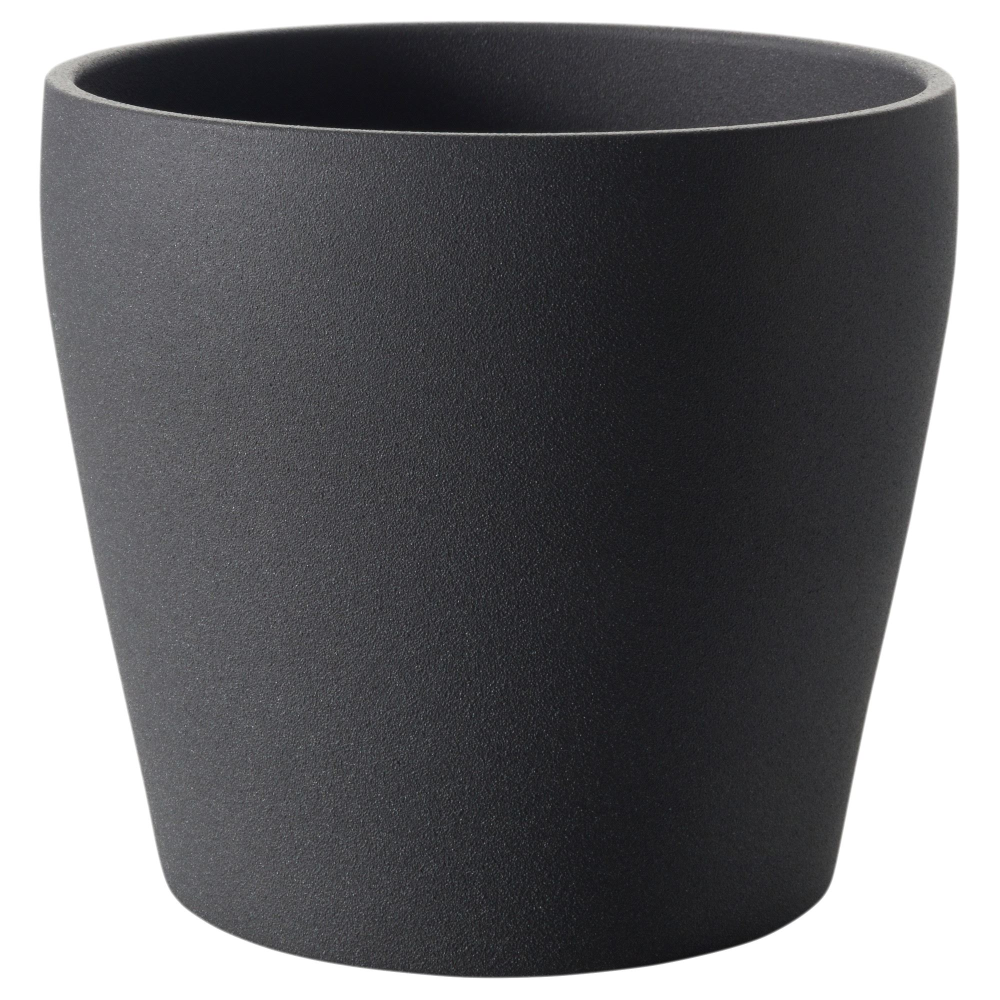
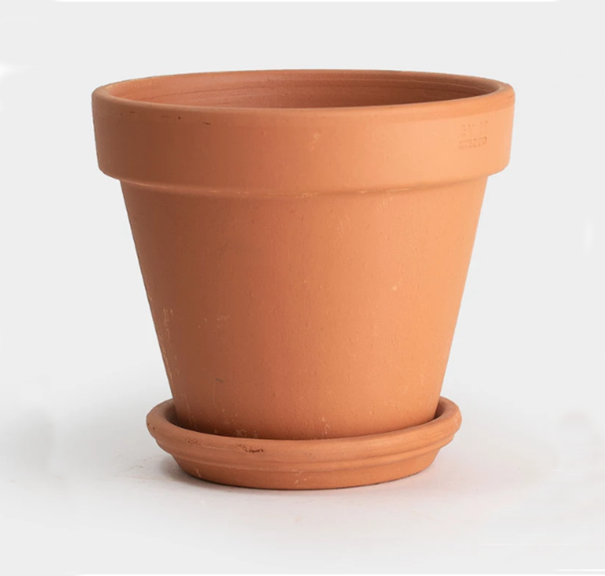
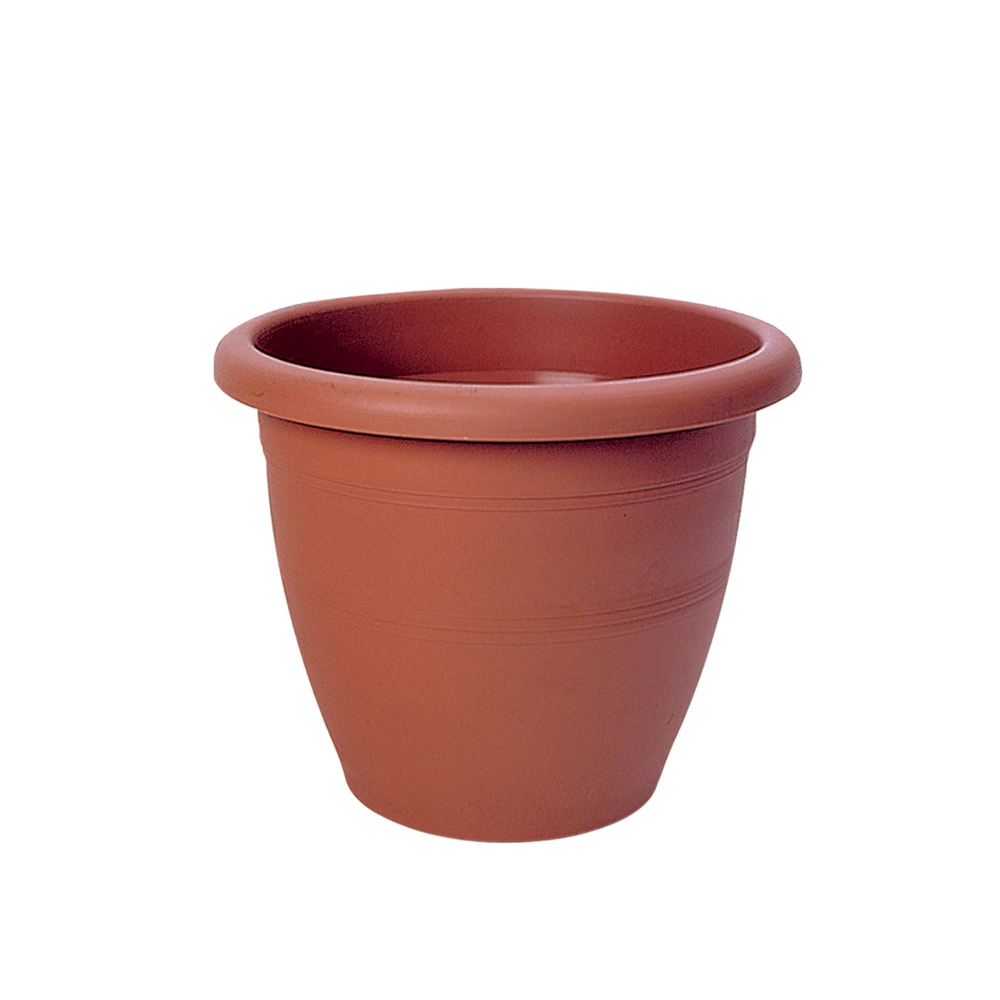
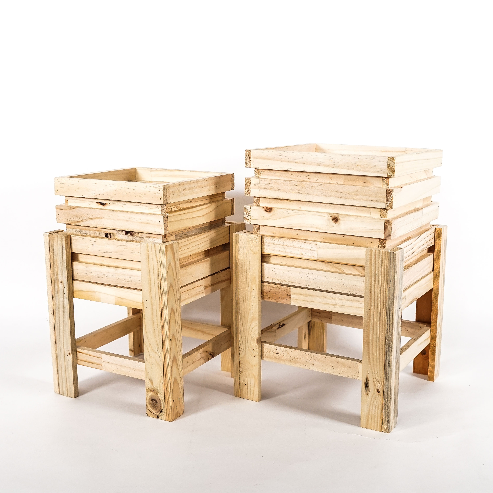
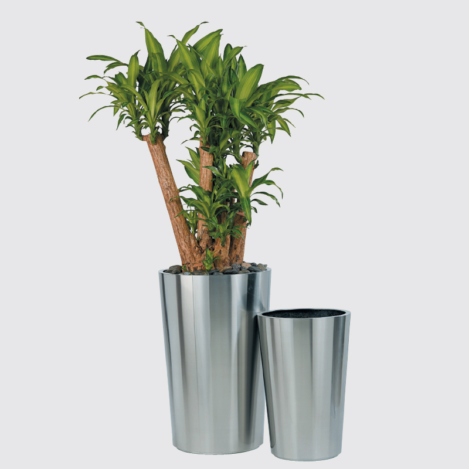
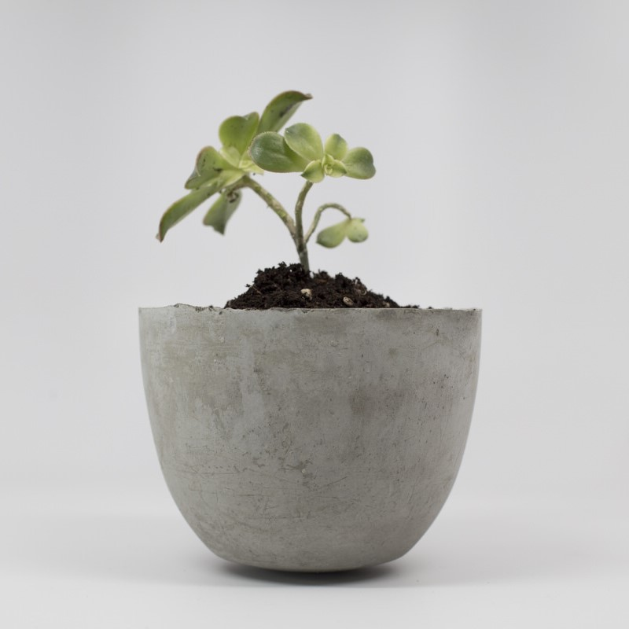
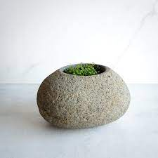
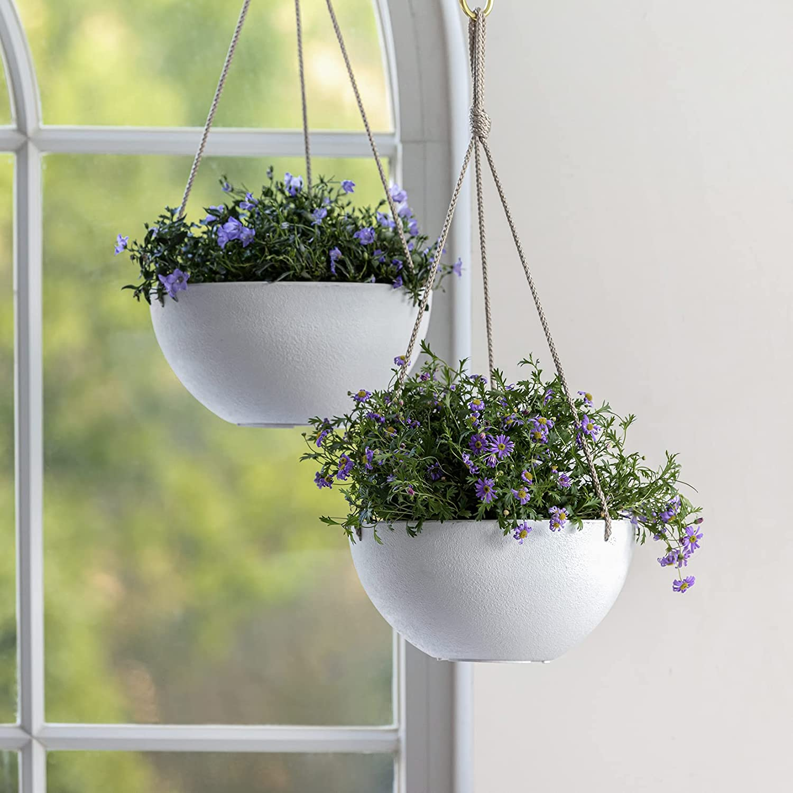

Given the damage caused by the environment around, with plastic and related materials, most of the modern youth are seen to shift to coir pots. They are all new eco-friendly, biodegradable and long-lasting plants which come in different shapes and sizes. They are made with coconut husk, making them environment-friendly.

Ceramic Pot
RM 35.00
Information:
Also known as stoneware, the Ceramic pots are finely textured and are made with light-coloured clay. They are outcomes of firing in a high kiln and then being shaped to bring in the desired outcome. Often, one can notice the ceramic pots to be attractive, as they are painted and decorated well with waterproof and paint-like substance.

Terracotta Pot
RM 15.00
Information:
Terracotta is quite similar and near to ceramic pottery. It is made with special terracotta clay, which is water-tight in nature and porous. Given that the issue of over-watering can be resolved quickly with these pots, they are great for dry soil plants. They are great pots to prevent soil diseases and root cot issues.

Plastic Pot
RM 5.00
Information:
As the name describes itself, plastic pots are most commonly found and are inexpensive to buy for many. Hence, it is the most preferred and sold item in nurseries, although we all know the disadvantage and adverse effects of using plastic. However, these are still commonly used as nursery pots and are easy to maintain.

Wood Pot
RM 25.00
Information:
We all love to have a fancy and beautiful look at our homes and wood is a common material which attracts us all. Any piece of wood can be transformed and altered into a décor piece easily. But one must note that given they are known to deteriorate quickly due to adverse environmental conditions, it is best to have them for indoor use.

Metal Pot
RM 10.00
Information:
Given the bright and fancy colour with shine, metal pots are getting glamorous around. Especially, copper and brass metal pots are great to add to our living spaces, with a pinch of sophisticated look and modern accent. However, given that they may heat up quickly when put outdoors, they are best as indoor plants.

Concrete Pot
RM 20.00
Information:
If you are a sucker for succulent plants, then concrete pots are the best fit. These are porous in nature, where water can be absorbed or evaporated quickly. Besides these, they are quite durable, reliable, and long-lasting too. They can make a great décor piece.

Stone Pot
RM 20.00
Information:
Most of us haven’t heard about stone pots, and why not! They aren’t quite widely prevalent, but they are coming into fashion today with their new shapes and colours. They are again great indoor decorative pieces, which are very strong and durable. They are resistant to water and are suitable for tiny plants.

Baskets Pot
RM 40.00
Information:
Hanging pots like baskets are the new trend today. We often spot the scene in most homes, and they surely add great décor and bring in creativity inside living spaces. The unique hanging plants can be a great option to choose for these spots.